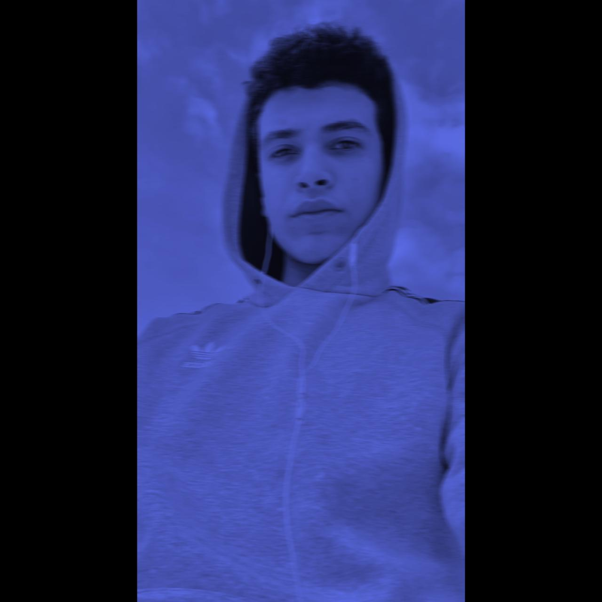
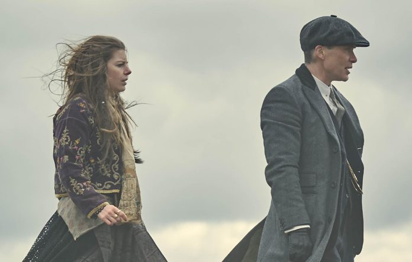
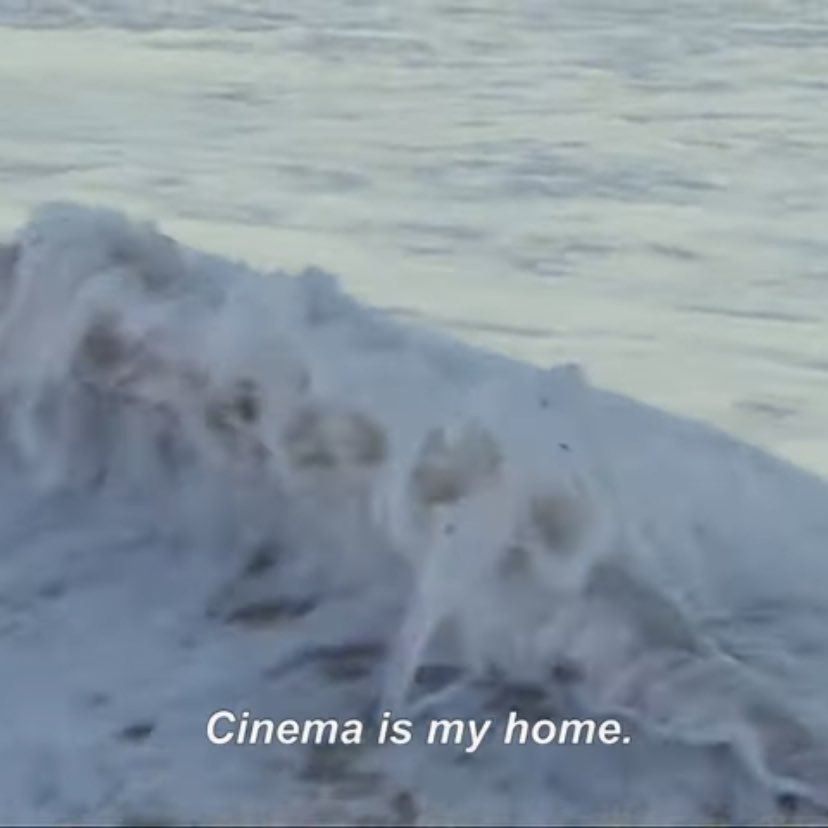
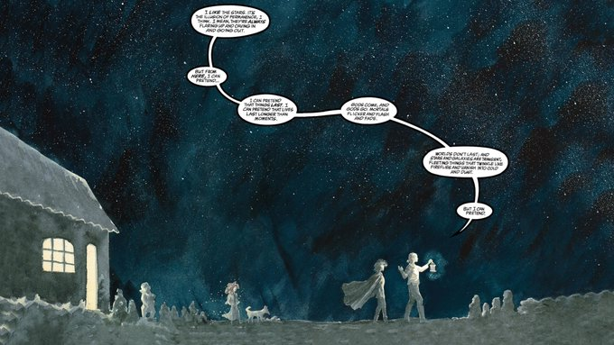
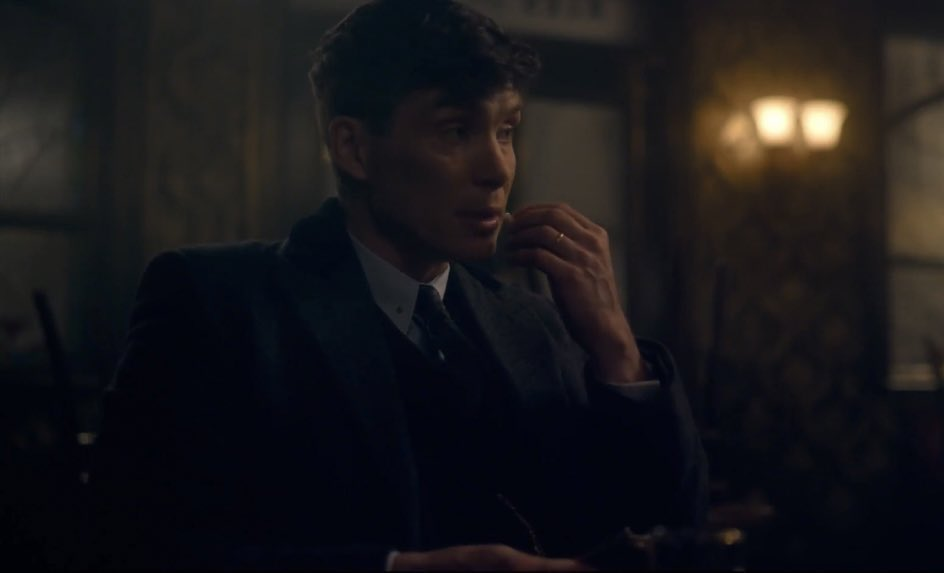

more_horiz
Home
auto_awesome- image
- gif_box
- poll
- sentiment_satisfied
- event
karim. @karim_altohamy . 10h
more_horizplease like this video and subscribe to codezila
karim. @karim_altohamy . 4h
more_horiz"Madonna, put me through to the number I gave you for Esme Shelby Lee”
karim. @karim_altohamy . 15h
more_horiz'The Beaches of Agnès' (2008, Agnès Varda)
karim. @karim_altohamy . 2h
more_horizsome days you just want to be pinned down by gentle intimacy.
karim. @karim_altohamy . 1h
more_horizPhotoshop wizards out there, I need your help. I want to remove speech bubbles from this panel while maintaining size and resolution.. please? 👉👈
karim. @karim_altohamy . 1h
more_horizYES SIR, PLEASE SIR
What's happening
Trending in Eygpt
more_horiz
codrzila
64.7k Tweets
Trending in Eygpt
more_horiz
codrzila
64.7k Tweets
Trending in Eygpt
more_horiz
codrzila
64.7k Tweets
Trending in Eygpt
more_horiz
codrzila
64.7k Tweets
Trending in Eygpt
more_horiz
codrzila
64.7k TweetsWho to follow
karim.
@karim_altohamy